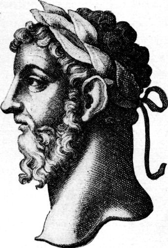

Culture · Philosophy
마르쿠스 아우렐리우스 명상록 — 황제도 자신에게 말을 걸었다
다른 사람을 바꾸기 전에 살피는 판단과 하루의 행동

아침에 일어나 해야 할 일을 시작하기 싫은 날이 있다. 오래된 책에서 이와 비슷한 망설임을 만나면 저자가 로마 황제였다는 사실이 조금 의외로 느껴진다. 모든 명령을 내릴 수 있을 듯한 사람도 자신의 하루를 스스로 설득해야 했던 것이다.
마르쿠스 아우렐리우스의 『명상록』은 짧은 기록들을 통해 자신을 다루는 법을 되묻는 책이다. 완성된 정답을 아랫사람에게 선포하는 연설처럼만 읽기보다, 왜 어떤 말을 자기에게 거듭 해야 했는지 생각하며 들어가 보면 가깝다.
1. 황제의 삶을 먼저 조금 알아 두기
그는 121년에 태어나 180년에 세상을 떠났다. 안토니누스 피우스의 뒤를 이어 161년에 황제가 되었고, 통치의 시간에는 전쟁과 여러 어려움이 있었다. 책에서 말하는 평정은 모든 외부 문제가 해결된 조용한 방에서만 생각한 주제가 아니었다.
그렇다고 힘든 일을 겪었으니 모든 판단이 옳았다는 뜻은 아니다. 황제라는 지위에는 큰 권한과 다른 사람에게 영향을 미치는 책임이 함께 있었다. 철학을 쓰는 사람과 실제로 통치하는 사람을 모두 보아야, 한 사람을 그저 훌륭한 격언의 이름으로만 만들지 않게 된다.
2. 첫 부분에는 누구에게 배웠는지가 나온다
제1권에서는 가족과 스승, 주변 사람들에게서 무엇을 배웠는지 돌아본다. 스스로를 아무에게도 빚지지 않은 지혜로운 사람으로 소개하는 방식과 다르다. 어떤 태도를 보고 익혔으며 어떤 도움을 받았는지를 먼저 놓는다.
이 부분을 읽을 때는 이름을 전부 외우기보다 배움의 내용이 어떻게 구체적인 행동과 연결되는지 살펴보자. 참는 태도와 말을 다루는 법, 일하는 자세는 추상적인 덕목이면서 동시에 다른 사람의 생활에서 볼 수 있는 것이었다. 철학의 시작에 관계의 기억이 들어 있다.
3. 불편한 사람을 만날 하루를 준비한다면
다른 사람의 무례와 고집을 생각하는 대목들도 나온다. 세상에 불편한 사람이 없어야만 평온할 수 있다고 기대하면 하루의 조건을 너무 좁게 만들 수 있다. 저자는 외부에 대한 불평에 앞서 자신이 어떤 판단과 행동을 할지 돌아보려 한다.
그렇다고 남이 해를 끼쳐도 아무 일 없다고 받아들이라는 말로 단순화하면 안 된다. 무엇을 잘못이라고 보고 어떤 행동을 취할지, 그 과정에서 자신까지 무분별해지지 않을지 살피는 문제다. 참는다는 단어 하나보다 판단을 잃지 않는다는 방향으로 읽어 볼 수 있다.
4. 사건과 내가 붙인 설명 사이
『명상록』은 바깥에서 일어난 일과 그 일에 대한 자신의 판단을 거듭 구분하게 한다. 어떤 일이 불쾌했다는 느낌은 사실이지만 그 느낌이 사건의 모든 뜻을 다 설명하는 것은 아닐 수 있다. 멈추어 살필 틈을 만드는 것이다.
오늘의 예로 약속한 답장을 늦게 받은 상황을 생각해 볼 수 있다. 상대가 나를 무시한다고 바로 결정하기 전에 아직 모르는 조건이 있는지 묻는 것이다. 이는 원문의 실제 사례를 인용한 것이 아니라 생각의 방향을 이해하기 위한 예다. 확인할 일과 상상으로 붙인 설명을 나누는 데 철학이 쓰일 수 있다.
5. 침대에서 일어나기 싫다는 작은 문제
제5권의 시작에서는 아침에 일어나기 싫을 때 자기에게 어떤 말을 할지 묻는다. 인간이 해야 할 일을 위해 일어나는 문제를 다른 생명들이 활동하는 모습과 연결한다. 황제의 거대한 공적보다 매일의 작은 저항을 다루는 구절이 먼저 눈에 들어올 수도 있다.
이것을 쉬지 말고 일하라는 현대의 생산성 명령으로 바로 바꾸지는 말자. 책은 자기 삶의 역할과 행동을 생각하는 맥락에 놓여 있다. 지금의 독자는 자신의 조건과 건강, 맡은 책임을 살피며 읽을 수 있다. 고대의 문장이 오늘 모든 사람의 동일한 일정표가 되는 것은 아니다.
6. 마음을 다스리는 일은 공동체와 이어진다
스토아 철학을 이야기할 때 혼자 평온해지는 기술만 떠올리기 쉽다. 그러나 이 책에는 사람들과 함께 살아가는 일과 정의, 공동의 이익에 관한 생각도 반복해서 나온다. 내 기분을 지키는 것과 다른 사람에게 어떤 행동을 하는가는 떨어져 있지 않다.
특히 권한을 가진 사람의 평정은 자신만 편안하기 위한 상태로 끝날 수 없다. 판단이 덜 흔들린다면 그 힘을 어떤 결정에 사용할 것인가라는 문제가 남는다. 황제의 책을 읽는 재미도 여기 있다. 마음속의 질문이 실제 세계에 미치는 책임과 만난다.
7. 같은 말을 반복한다고 생각될 때
『명상록』에서는 비슷한 생각이 여러 번 나타난다. 처음부터 끝까지 한 주장으로 곧게 나아가는 교과서를 기대하면 되풀이처럼 느낄 수 있다. 그러나 이미 안다고 여기는 원칙을 실제로 지키기 위해 다시 적는 말로 보면 반복의 성격이 달라진다.
독자가 모든 구절에 동의해야 하는 것도 아니다. 짧은 대목 하나를 읽고 그것이 어떤 상황에서는 도움이 되고 어떤 곳에서는 설명이 더 필요한지 생각해 보자. 유명한 문장을 떼어 자신의 판단을 면제해 주는 말로 쓰기보다 검토할 말로 놓는 편이 책과 오래 만나는 방법이다.
8. 오래된 초상 곁에 오늘의 질문 하나 두기
함께 실은 것은 옛 영문판에 수록된 마르쿠스 아우렐리우스의 역사적 초상 재현 도판이다. 황제의 하루를 직접 촬영한 자료나 글을 쓰던 순간을 복원한 그림은 아니다. 특정 얼굴에서 완벽한 침착함을 읽어 내려고 하기보다 기록의 질문으로 돌아가면 좋다.
오늘 무슨 일이 있었는지와 그 일에 내가 어떤 설명을 붙였는지를 한 번 나누어 적어 보자. 세상을 뜻대로 만들 수 없다는 체념만 남기려는 것이 아니다. 아직 살필 판단과 선택할 행동이 무엇인지 알아보는 일이다. 황제가 자신에게 건넨 오래된 말이 오늘의 하루를 돌아보는 작은 도구가 될 수 있다.
이야기의 바탕이 된 자료
- 마르쿠스 아우렐리우스 — Thoughts of Marcus Aurelius Antoninus, George Long 번역 ↗확인일 2026-10-30
121~180 생애·161년 황제 계승·전쟁과 통치의 맥락 · 제1권의 배움과 감사·제2권의 하루와 타인·제5권의 일어나기 · 판단과 외부 사건·공동체와 정의·후대에 전해진 짧은 기록의 형식
- 명상록 — 역사적 영문판과 인물 도판 ↗확인일 2026-10-30
antoninus.jpg를 마르쿠스 아우렐리우스의 역사적 초상 도판으로 식별
- 명상록 서지·인물 식별 정보 ↗확인일 2026-10-30
Marcus Aurelius, Emperor of Rome, 121~180; 스토아 철학 관련 자료